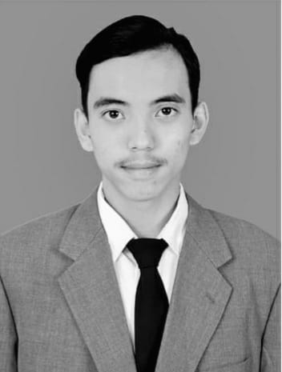

Oktaviano Kurniawan

Tentang Saya
Halo semuanya,
Saya Oktaviano Kurniawan biasa dipanggil vian atau okta, Saya lahir di Banyuwangi
pada tanggal 5 Oktober 2001. Saya anak ke 2 dari 2 bersaudara. Saya saat ini bertempat
tinggal di perumahan pengatigan indah. Agama yang saya anut adalah agama kristen.
Saat ini saya menempuh pendidikan di Politeknik Negeri Banyuwangi dan mengambil jurusan
Teknik Informatika prodi Teknologi Rekayasa Perangkat Lunak.
Keahlian
- Main Musik
- Main Game
- Microsoft Office(Word, Excel, Powerpoint)
Pendidikan
- 2006 - 2008 : TK Katolik Siwipeni Rogojampi
- 2008 - 2009 : SD Katolik Bakti Rogojampi
- 2009 - 2010 : SD Negeri 1 Bulusan
- 2010 - 2014 : SD Negeri 1 Pengatigan
- 2014 - 2017 : SMP Katolik Bakti Rogojampi
- 2017 - 2020 : SMK PGRI 1 Giri Banyuwangi
- 2020 - Sekarang : Politeknik Negeri Banyuwangi
Kontak Saya